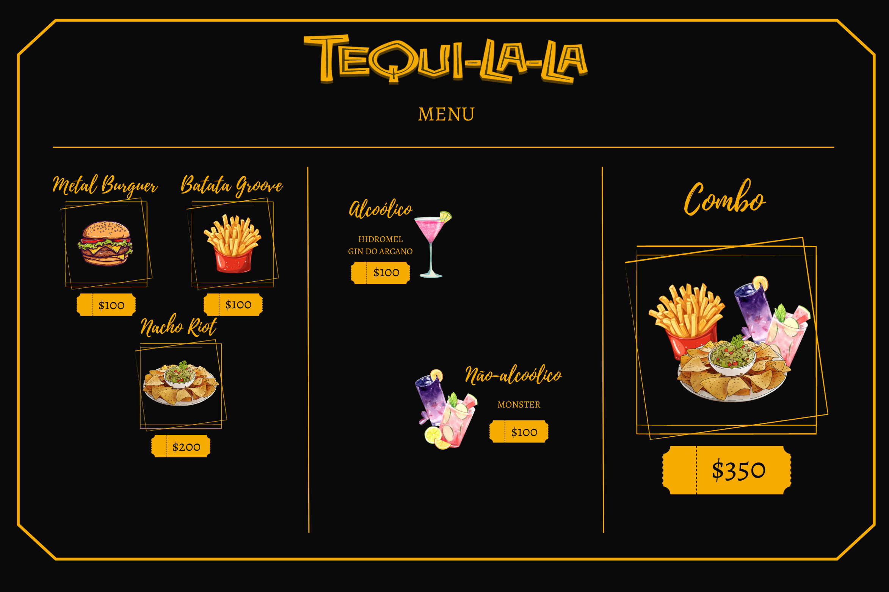

Há muitos anos, em uma parte esquecida de Ethergate Valley, Morgan Parriott, o visionário líder dos Filhos da névoa, deparou-se com um estabelecimento decadente conhecido como Tequila la. O local, apesar de seu estado precário, capturou a imaginação de Morgan, que viu além das rachaduras nas paredes e do mobiliário desgastado.
Com um olhar afiado para oportunidades, Morgan adquiriu o Tequila la e empreendeu uma ambiciosa jornada de revitalização. O local, outrora caindo aos pedaços, foi transformado por suas mãos habilidosas e pela visão de um líder. As rachaduras deram lugar a uma atmosfera acolhedora, o mobiliário desgastado foi substituído por peças cuidadosamente escolhidas, e o lugar renasceu como um refúgio noturno elegante e discreto.
Antes de adormecer, Morgan Parriot deu a seu filho, Ronnie, um presente especial: o Tequila la. O bar, outrora negligenciado, foi renovado por Morgan, tornando-se mais do que um local noturno; agora, era um legado familiar. Ronnie, ao assumir o controle, viu nas paredes revitalizadas do Tequila la um testemunho tangível do compromisso de sua família com o passado, o presente e o futuro.
Arraste para o lado
